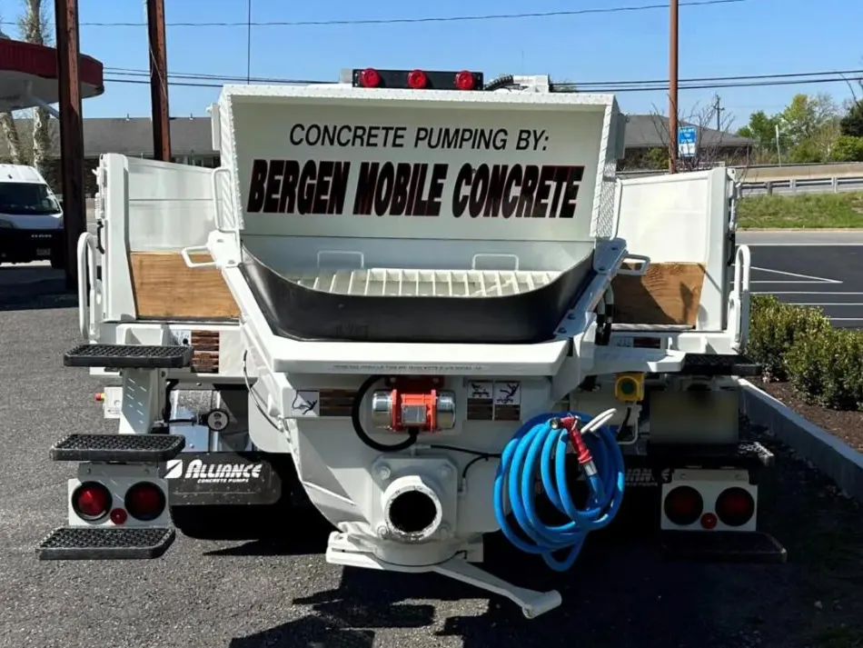
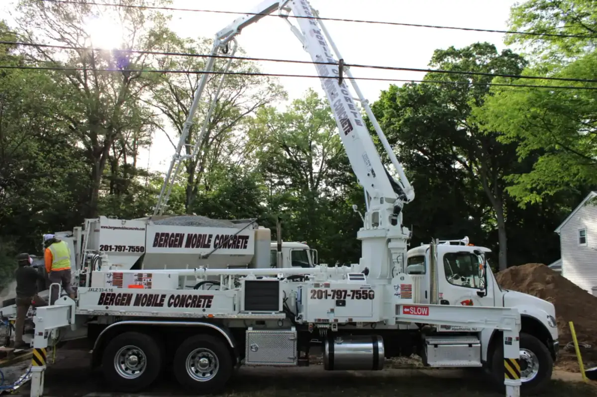
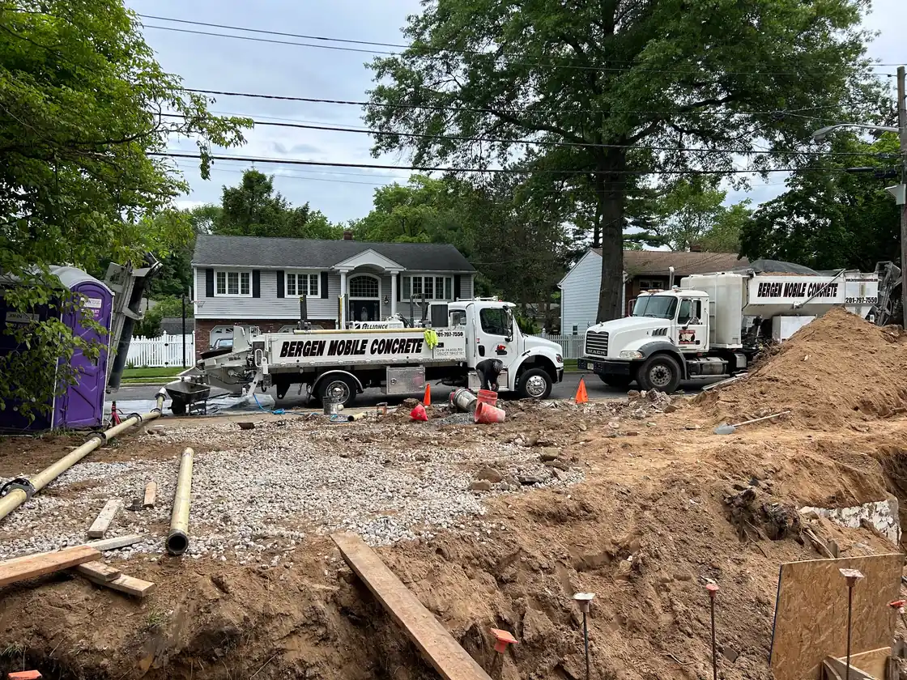

2½-inch line pump
The hose runs from the truck through tight spots to your forms, with a smooth, steady flow.
- For our ⅜-inch pea gravel pump mix
- Easy to move in tight spaces
- Line reaches up to 300 ft
Concrete pumping across North Jersey: line pumps that reach up to 300 ft and a 33-meter Z-fold boom, fed by our own metered mixers.
Pump specs for masons and contractors
Pick the closest match. Dispatch confirms the setup when you call.

The hose runs from the truck through tight spots to your forms, with a smooth, steady flow.

Takes all our mixes, including standard ¾-inch stone. The bigger line pumps faster on bigger pours.

The boom reaches over fences, walls and landscaping and places the concrete where you need it, with less labor on site.
For masons and contractors. Reach depends on the site, so dispatch confirms the setup.
Tell us the yards, the town, the day and where the forms are. We schedule the concrete and the pump together.
Send what we agreed from this page, so you and dispatch both have it in writing. No retyping the whole job.
The mixer and the pump arrive together, and the meter records every yard you pour.
